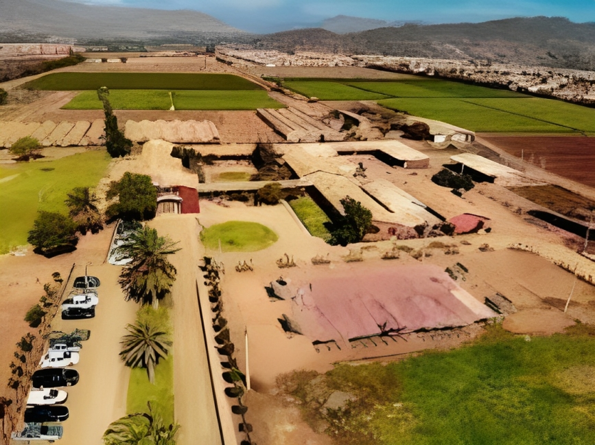
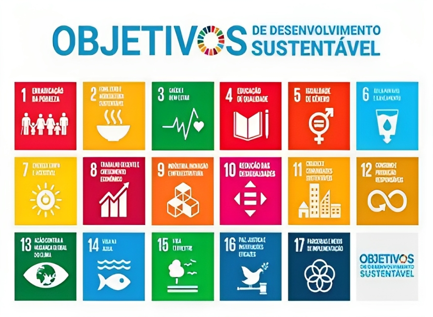
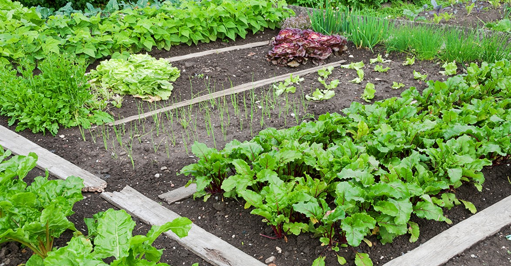
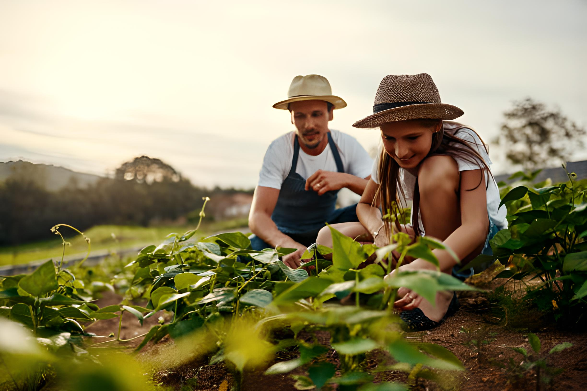
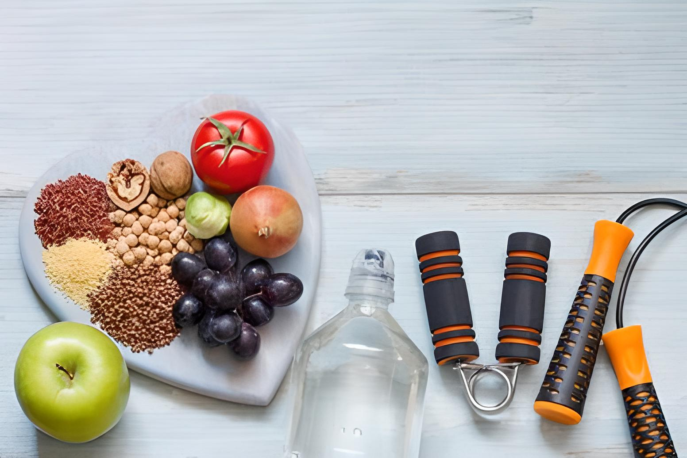

ETEC Professora Maria Cristina Medeiros
O processo de implantação da Escola Técnica Estadual de Ribeirão Pires teve início em 2005, ocorreu por uma extensão da ETEC “Júlio de Mesquita” de Santo André com o apoio da Secretaria Municipal de Educação, Cultura, Turismo e Desenvolvimento.
Hoje, a ETEC MCM, é responsável em ministrar cursos técnicos (período noturno), com os cursos de Contabilidade, Química, Logística, Administração; E o ensino médio integrado ao técnico (período matutino e vespertino), com os cursos de Administração, Recursos Humanos, Técnico em informática.
El proceso de implementación de la Escuela Técnica Estadual de Ribeirão Pires comenzó en 2005, ocurriendo como una extensión de la ETEC “Júlio de Mesquita” en Santo André con el apoyo de la Secretaría Municipal de Educación, Cultura, Turismo y Desarrollo.
Hoy, ETEC MCM se encarga de impartir cursos técnicos (horario vespertino), con cursos de Contabilidad, Química, Logística, Administración; Y la educación secundaria integrada con la educación técnica (sesiones matutinas y vespertinas), con cursos de Administración, Recursos Humanos y Técnico Informático.

Escola participante
Escuela participante
Escola Liceo Tadeo Perry Barnes
...
...
- 1 de Janeiro – Ano Novo: Celebra a virada do ano.
- 1 de Janeiro – Ano Novo: Celebra a virada do ano.

- 1 de Janeiro – Ano Novo: Celebra a virada do ano.

- 1 de Janeiro – Ano Novo: Celebra a virada do ano.
- 1 de Janeiro – Ano Novo: Celebra a virada do ano.
- 1 de Janeiro – Ano Novo: Celebra a virada do ano.

ODS - A Sustentabilidade e a cooperação dos Objetivos de Desenvolvimento Sustentável
Sostenibilidad y cooperación con los Objetivos de Desarrollo Sostenible
A sustentabilidade refere-se à capacidade de atender às necessidades presentes sem comprometer a capacidade das gerações futuras de atender às suas próprias necessidades, enquanto isso os Objetivos de Desenvolvimento Sustentável (ODS) são uma iniciativa da ONU (Organização das Nações Unidas) que consiste em 17 metas globais para abordar questões urgentes de desenvolvimento sustentável
La sostenibilidad se refiere a la capacidad de satisfacer las necesidades presentes sin comprometer la capacidad de las generaciones futuras para satisfacer sus propias necesidades, mientras que los Objetivos de Desarrollo Sostenible (ODS) son una iniciativa de la ONU (Naciones Unidas) que consta de 17 objetivos globales para abordar cuestiones urgentes de desarrollo sostenible.

Hortas Escolares e sua relevância
Los huertos escolares y su relevancia
A horta em qualquer ambiente que é colocada, contribui com a economia na hora de fazer a feira e em vários momentos do cotidiano. Cultivar sua própria horta também colabora para uma alimentação mais saudável e livre de agrotóxicos.
El huerto, en cualquier entorno en el que se encuentre, contribuye al ahorro en la realización del mercado y en diversos momentos de la vida diaria. Cultivar tu propio huerto también contribuye a llevar una dieta más saludable y libre de pesticidas.

De acordo com o Ministério de Saúde (2018), cerca de 55% dos adolescentes ingerem produtos industrializados frequentemente.
Com a prática da horta escolar, é possível auxiliar a escola a proporcionar um cardápio variado e saudável ao seus alunos, incluindo a economia de gastos a fornecedores. Com isso, é possível auxiliar na sustentabilidade do plantio e na alimentação saudável. Ao incentivar este, jovens ganham interesse nas pautas citadas, ou seja, a conscientização, além das competências socioemocionais para a vida profissional e pessoal ao participar da proposta.
Según el Ministerio de Salud (2018), alrededor del 55% de los adolescentes consumen con frecuencia productos procesados. Con la práctica de un huerto escolar, es posible ayudar al colegio a brindar un menú variado y saludable a sus alumnos, incluyendo el ahorro en gastos de proveedores. Con esto se puede ayudar con la sostenibilidad de la siembra y la alimentación saludable. Al incentivar esto, los jóvenes ganan interés en los temas antes mencionados, es decir, concientización, además de habilidades socioemocionales para la vida profesional y personal al participar de la propuesta.

- Ter contato com uma horta e aprender sobre como os alimentos são cultivados estimula as crianças a terem uma alimentação mais saudável, com frutas, verduras e legumes, plantados por elas, o que aumenta a satisfação em consumir esses alimentos.
- Além da alimentação, o contato com elementos da natureza faz bem para a saúde mental das crianças, contribui com a redução do estresse, da ansiedade, do déficit de atenção e da hiperatividade, muitas vezes causados pelo excesso de telas e pelo confinamento.,
- Construir coisas com as próprias mãos, e vê-las alcançar um bom resultado, também contribui com o aumento da autoestima das crianças, que se sentem orgulhosas de si mesmas e ganham confiança ao realizar as demais atividades escolares acreditam que são capazes!
- Construir a horta também demanda atividade física, estimulando os alunos a se movimentar e realizar esforço ao manusear as ferramentas e materiais necessários, em vez de permanecerem sentados por longos períodos na sala de aula.
- O contato com a natureza permite o desenvolvimento biopsicossocial da criança, que estabelece uma interação saudável entre ela e o meio em que vive, e a horta pode ser considerada parte integrante de aspectos sociais, psicológicos e biológicos do indivíduo.
- Tener contacto con un huerto y aprender cómo se cultivan los alimentos incentiva a los niños a llevar una dieta más saludable, con frutas y verduras plantadas por ellos, lo que aumenta la satisfacción de consumir estos alimentos.
- Además de la comida, el contacto con elementos de la naturaleza es bueno para la salud mental de los niños, contribuyendo a la reducción del estrés, la ansiedad, el déficit de atención y la hiperactividad, muchas veces causados por el tiempo excesivo frente a la pantalla y el encierro.
- Construir cosas con tus propias manos, y verlas lograr un buen resultado, también contribuye a aumentar la autoestima de los niños, quienes se sienten orgullosos de sí mismos y ganan confianza al realizar otras actividades escolares, ¡creyéndose capaces!
- La construcción del huerto también requiere actividad física, fomentando que los estudiantes se muevan y se esfuercen en el manejo de las herramientas y materiales necesarios, en lugar de permanecer sentados durante largos periodos en el aula.
- El contacto con la naturaleza permite el desarrollo biopsicosocial del niño, lo que establece una interacción saludable entre él y el entorno en el que vive, y el jardín puede considerarse parte integral de los aspectos sociales, psicológicos y biológicos del individuo.

- Começar o dia arrumando a cama;
- Fazer um checklist para resolver as pendências;
- Ter um estilo de vida mais saudável, começando pela alimentação e pela atividade física;
- Aprender algo novo frequentemente;
- Dormir bem;
- No dia a dia, uma boa parte da população passa por jornadas duplas ou triplas, a exemplo de estudantes que trabalham de dia e estudam à noite. Com uma rotina, fica muito mais fácil gerenciar o tempo entre os compromissos e encaixar as tarefas correspondentes
- Empieza el día haciendo la cama;
- Hacer una lista de verificación para resolver asuntos pendientes;
- Tener un estilo de vida más saludable, empezando por la alimentación y la actividad física;
- Aprenda algo nuevo con frecuencia;
- Dormir bien;
- En la vida cotidiana, gran parte de la población trabaja en turnos dobles o triples, como los estudiantes que trabajan de día y estudian de noche. Con una rutina, resulta mucho más fácil gestionar el tiempo entre citas y realizar las tareas correspondientes.

{kind=link}
{kind=link}